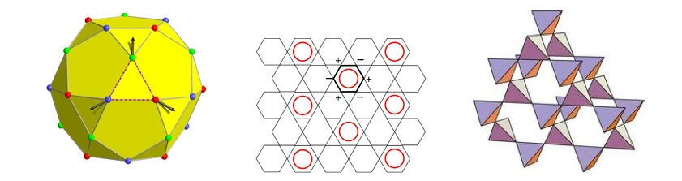

Physics 7910, Section 030
Spring 2013
Quantum Magnetism
Tuesday, Thursday: 10:50am-12:10pm
JFB 210

Instructor: Dr.
Oleg Starykh
Office: JFB 304
Phone: 801-581-6424
Fax: 801-581-4801
E-mail:
starykh {at} physics.utah.edu
Office hours: Thursday, 2:00 - 3:00 pm, JFB 304; or by appointment.
The aim of Quantum Magnetism
course is to explain
basic notions and concepts of quantum magnetism and many-body physics
in general. Theoretical development will follow closely
modern experiments in various quantum magnets.
The idea is to explain how
the multitude of observed phenomena
follow from few basic concepts, and to illustrate close
connections between various theoretical models and real magnetic materials.
Topics to be covered
- Tentative outline
- Origins of magnetism: lect 1, lect 2
Addition of angular momenta lect 3
- Homework 1 (due 1/31/2013) (solution sol1)
- Interaction between spins: exchange
Direct exchange lect 4
Crystal field lect 5, effect of ion's environment
- Magnetic structures: broken symmetry
Ferromagnetic ground state and spin waves lect 6, T=0
Mean-field theory, approach to critical temperature lect 7
- Homework 2 (due 2/14/2013) (solution sol02, check scalar spin chirality in problem 4!)
General Heisenberg model: co-planar spin states and susceptibility lect 8
- Magnetic excitations: spin waves in ferro- and antiferromagnets lect 9
- Homework 3 (due 2/28/2013) (solution sol03)
- Spin-wave analysis of frustrated J1-J2 model, possibility of quantum-disordered ground state
lect 10
- Bose-Einstein condensation of magnons lect 11, and additional material lect 11B
- Linear response lect 12;
energy absorption and Im χ lect 13
- Homework 4 (due 3/21/2013)
- Required reading by 3/19/2013: Second Quantization
- Lecture note on second quantization
End-of-the-semester presentation topics are listed here
- Susceptibility of electron gas lect 14, Lindhard function
- Itinerant magnetism. Required reading Ch.7 of Blundell's textbook.
- Homework 5 (due 4/11/2013)
- Kramers-Kronig relations and Joule heating lect 15
- RPA susceptibility of interacting electrons, plasmon mode lect 16
- Charge and spin susceptibilities, instabilities of Fermi liquid
lect 17
- Hubbard model at weak-coupling: nesting and van Hove singularity
lect 18
- Physical meaning of spin density wave instability lect 19
- Modern magnetism: ice, spin ice, spin chains and spin liquids -- broad overview
lect 20 (warning: this is approx. 12 Mb file)
- Spin chain and spinon continuum lect 20;
slides of the two-spinon continuum for the s=1/2 Heisenberg chain
slides
- Exotica: valence bond solids and spin liquids:
- Overview of spin liquids by Yong Baek Kim
(the full original talk is here)
- Oleg Tchernyshyov's kagome story
(the original presentation and more is
here).
Course structure
The textbook for the class is S. Blundell
``Magnetism in Condensed Matter" (see Amazon's cite for the book info). In addition, extensive lecture notes will be provided.
The course will be supplemented by suggested reading from textbooks
such as: D. Mattis ``Theory of magnetism made simple", A. Auerbach ``Interacting electrons and
quantum magnetism", S. Sachdev ``Quantum phase transitions", X.-G. Wen
"Quantum field theory of many-body systems", and few others.
There will be regular homeworks, one every two weeks.
The grade is based on homework problems and student presentations at the end of the semester
(topics will be selected in the class).
{kind=link}